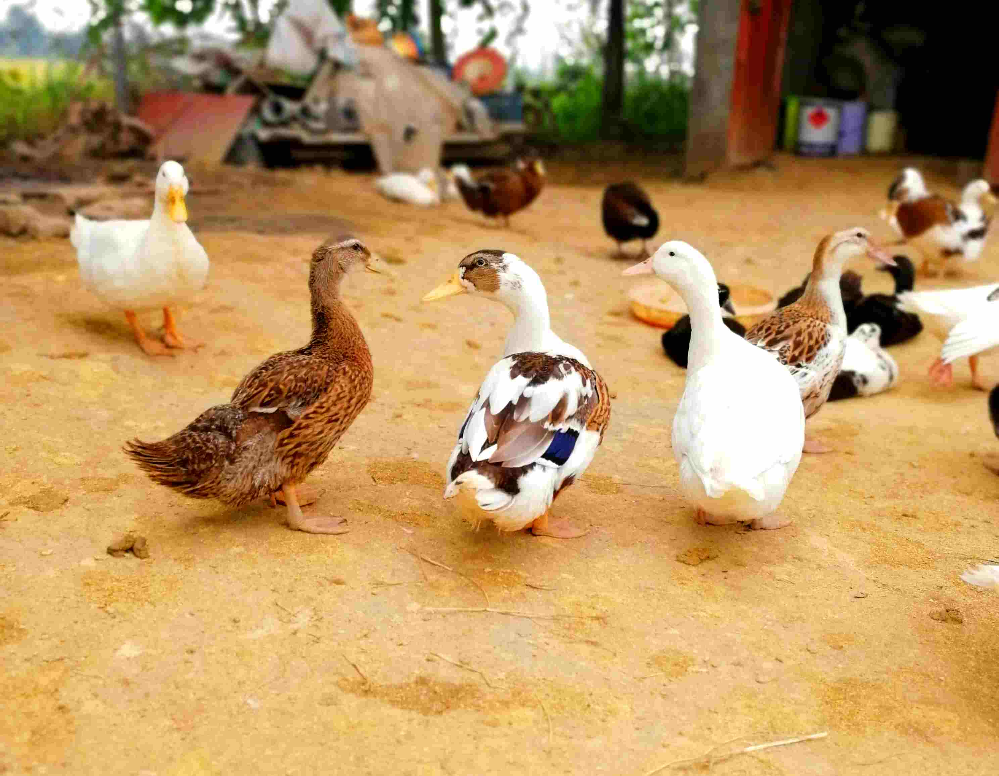

اردک ها پرنده هایی با وزن دو الی سه کیلو هستند که در رنگ های متفاوت یافت میشوند . پرورش اردک ها نسبت به غازها آسان تر است چون اردک ها میتوانند از زمین های کشاورزی غذای خود را تامین کنند بدون اینکه به ساقه های برنج ضربهای بزنند . از دیگر ویژگی های اردک ها میتوان به شنا و حرکات زیبا در آب اشاره کرد که صحنه های جالبی را ایجاد میکنند .
از لحاظ شهودی یک معیاری که برای تشخیص دادن زمان کشتار اردک استفاده میشود این است که آیا بال اردک به اندازهای رشد کرده است که به دم آن برسد یا نه . تعیین کردن این زمان به طور دقیق دشوار است چون بسته به غذا و شرایط زندگی و نژاد اردک میتواند بین دو الی سه ماه طول بکشد لذا از این معیار شهودی برای تعیین زمان کشتار اردک ها استفاده میشود
احتمالا زیاد شنیدهاید یا حتی دیدهاید که بعضی از اردک ها هنگام طبخ از خود بوی بدی تولید میکند که در اصطلاح مازندرانی میگویند پرک کنه. این به دلیل کشتن اردک ها زودتر از زمانی که پیشتر به آن اشاره شد رخ میدهد . چون پرورش دهندگان اردک میخواهند زودتر به پولشان برسند پس زودتر اردک ها را به کشتار میرسانند و با قیمتی کمتر از حد معمول اردک های نابالغ و سبک وزن را در بازار های مختلف به فروش میرسانند و چون قیمت کمتری دارد کل ملت از آنها خرید میکنند و بعدا هنگام پخت اردک پشیمان میشوند :))
اردک های مجموعه اسپه سیکا خوش شانس ترین پرنده های این مجموعه به حساب میآیند چون به آنها اجازه داده میشود غذای خود را از زمین های کشاورزی پیدا تامین کنند . علاوه بر این در روز سه بار هم همراه غاز ها و بوقلمون ها غذا میخورند پس از این نظر وضع شان از غاز ها و بوقلمون ها بهتر است . با این حال باز هنگام غذا خوردن چنان دست پاچه میشوند و به سمت غذا میدوند که انگار چند روز است که غذایی نخورده اند :))

معمولا اردک ها را در تعداد بالا مثلا ۲۰۰۰ تا پرورش میدهند و اردک
هارا در زمین های کشاورزی رها میکنند تا اردک ها غذای موردنیاز شان
را پیدا کنند . در مجموعه اسپه سیکا هم اردک ها در
دو برحه زمانی در زمین های کشاورزی نگه داری میشوند :
زمان اول وقتی است که زمین های کشاورزی بعد از برداشت برنج به حال
خود رها میشوند که تقریبا شامل فصل های پاییز و زمستان میشود . در
این زمان زمین ها پر از آب هستند و شرایط برای اردک ها بسیار مساعد
است چون میتوانند حشره و کرم ها را از زیر آب پیدا کنند و بخورند که
باعث میشود زمین برای کشت بعدی آماده و سرحال شود .
زمان دوم تقریبا بعد از نشا (کاشتن جوانه های برنج) است یعنی زمانی
که جوانه های برنج به اندازه کافی قوی شده باشند تا حرکت اردک ها به
آنها آسیبی نرساند که تقریبا از اواسط خرداد امکان پذیر است . در این
زمان به دلیل گرم شدن هوا انواع و اقسام کرم ها در ریشه و ساقه های
برنج رشد میکند که باعث ضعیف شدن و مانع چند خوشه شدن برنج (کفر
زدن) برنج میشود که این مشکل را کشاورزان یا باید با سم ها حل کنند
و یا از اردک و زنبور که توسط جهاد کشاورزی ارایه میشود حل کنند .
ما در مجموعه اسپه سیکا از اردک ها برای کشتن کرم و
حشرات مضر استفاده میکنیم چون این روش هم به ارگانیک شدن اردک ها
کمک میکند و هم باعث تولید برنج سالم و ارگانیک میشود که توصیه
میکنم برای اطلاعات بیشتر درمورد برنج های تولیدی ما به سایت زیبای
طارم پلا مراجه کنید .
مجموعه طارم پلا و اسپه سیکا درکنار هم قرار دارند و از پرندههای (قوغاز و غازمحلی و اردک) مجموعه اسپهسیکا برای از بین بردن کرم ها و علف های هرز زمین های کشاورزی مجموعه طارم پلا استفاده میشود. این کار نیاز زمین های کشاورزی به سم های شیمیایی را از بین میبرد و باعث تولید برنج ارگانیک میشود